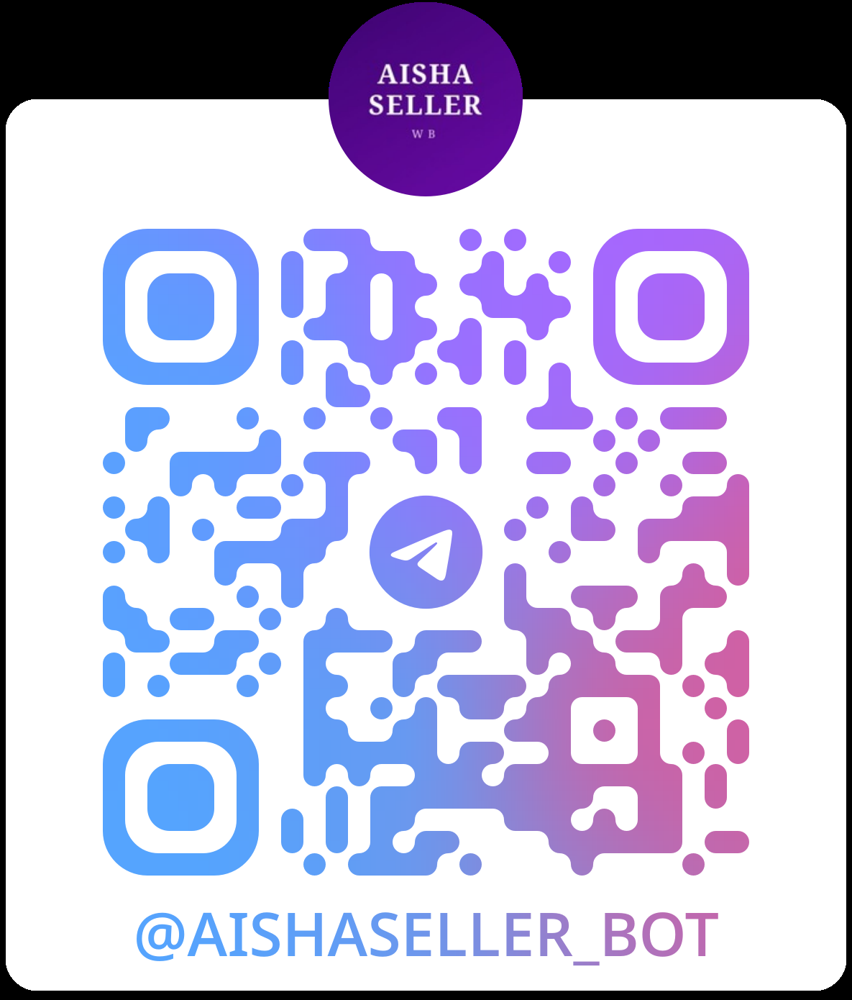

Неверный товар
Выбор на эмоциях вместо цифр и ёмкости ниши.
Постройте прибыльный бизнес с нуля или масштабируйте действующий магазин вместе с практикующим селлером и личной поддержкой на каждом шаге.
Практика вместо теорииПоддержка остаётся с вами навсегда
Маркетплейс не про удачу. Один неверный шаг в начале может стоить месяцев работы и сотен тысяч рублей.
Выбор на эмоциях вместо цифр и ёмкости ниши.
Решения принимаются без юнит-экономики и данных.
Покупатель не понимает ценность за первые секунды.
Хаотичные действия съедают время и бюджет.
Ставки растут, а прибыль остаётся на месте.
Ошибки копятся, а получить точный совет и поддержку не у кого.
Я не пересказываю чужую теорию. Всё, чему учу, ежедневно проверяю на собственном бизнесе.
Показываю не только «как правильно», но и где чаще всего теряют деньги. Помогаю построить понятную систему, принимать решения на цифрах и уверенно расти.
«Моя задача — не просто дать уроки. Я хочу, чтобы вы научились видеть бизнес целиком.»
Аиша разбирает ваш проект и помогает принимать сильные решения.
Доступ к обратной связи сохраняется и после завершения обучения.
Каждый важный этап проверяется — вы не идёте дальше с ошибкой.
Быстрые ответы, помощь и контроль движения по программе.
Окружение продавцов, обмен опытом и полезные контакты.
От регистрации до первых продаж и уверенного масштабирования.
Поиск поставщиков и грамотная работа с производством.
Как создать карточку, которая выделяется и конвертирует.
Для первого уверенного старта или персонального рывка в действующем бизнесе.
Идеально, если вы хотите запустить бизнес с нуля в сильной группе и с постоянной поддержкой.
Премиальный формат для личной стратегии, глубокого разбора и быстрого роста.
Системная программа без воды: каждый модуль превращается в конкретный результат для вашего бизнеса.
Получить программуРегистрация, выбор формы работы, кабинет Wildberries и финансовая модель.
Оценка ниши, конкурентов, спроса и потенциала продукта.
Поиск, переговоры, образцы, логистика и контроль качества.
Позиционирование, упаковка, визуальный язык и ценность.
Контент, инфографика, ключевые запросы и рост конверсии.
Юнит-экономика, продвижение, ставки и работа с бюджетом.
Управление ассортиментом, прибылью и системный рост.
за 2 месяца
оборот в месяц
конверсия в заказ
Результаты индивидуальны и зависят от ниши, вложений и выполнения рекомендаций.
Да. WB START построен так, чтобы провести новичка от выбора товара и регистрации до первых продаж без хаоса и догадок.
START — сильная групповая программа с кураторами. MENTOR — индивидуальная работа с Аишей, персональная стратегия и глубокий разбор вашего магазина.
Уроки и поддержка сохраняются после окончания программы. Вы сможете возвращаться к материалам и задавать вопросы дальше.
Тогда мы найдём точки роста: ассортимент, карточки, реклама, конверсия, экономика и стратегия масштабирования.
Нет. Сначала мы считаем экономику и проверяем гипотезу, а уже затем принимаем решение о закупке.
Перейдите в Telegram — там я помогу выбрать подходящий формат и отвечу на ваши вопросы.
Перейти в Telegram Ответим лично · Без обязательств
Наведите камеру@aishaseller_bot